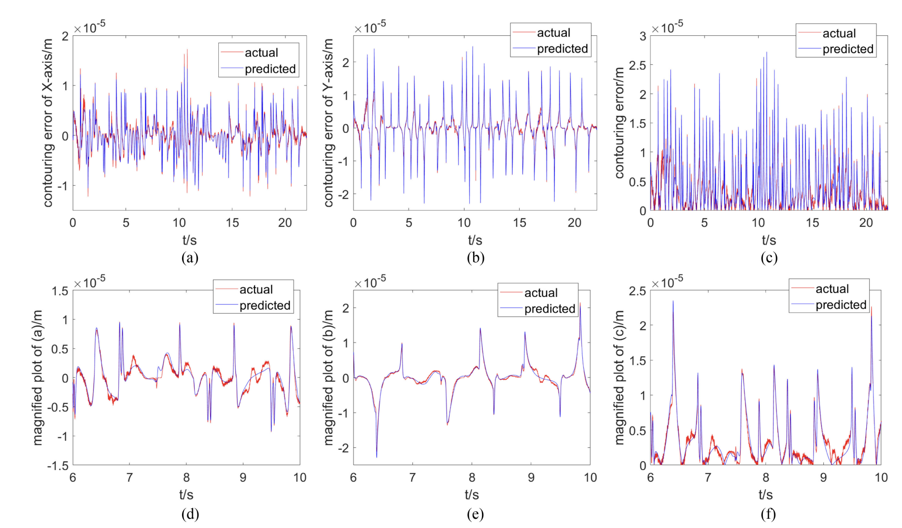

|
Haonan Chang I'm a fifth year robotics Ph.D. stundet at Rutgers University in New Brunswick advised by Prof. Abdeslam Boularias. I am currently working on combining latest generative model such as LLM, VLM, and VDM with robot manipulation to achieve robotics and general manipulation ability. At Rutgers I've worked on LLM/Drive Manipulation: A3VLM, LGMCTS; LLM-driven Scene understanding: OVSG; Dynamic Scene Reconstruction: Mono-STAR STAR-non-prior. In 2024, I was research intern at ByteDance foundation seeds, working on combining video-difffusion-model to long-horizon manipulation tasks. In 2023, I was a research intern at MERL, working on contact-rich robot manipulation, colloborating with Siddarth Jain. Our InsertOne was accepted by IROS2024. In 2022, I was an applied scientist intern at Amazon Lab126, working on SLAM system for Astro robot. Previously, I received Robotics M.S. and Mechanical Engineering M.S. from University of Michigan, Ann Arbor, advised by Prof. Chad Jenkins. I received my B.S. in Mechanical Engineering and Mathematics from Tsinghua University, Beijing, where I worked Prof. Chuxiong Hu. |

|
ResearchI have a broad interest in many different aspects of robotics, my research works cover perception, planning and control of robotics. Some papers are highlighted. |
|
|
Autoregressive Action Sequence Learning for Robotic Manipulation
Xinyu Zhang, Yuhan Liu, Haonan Chang, Liam Schramm, Abdeslam Boularias In Submission, 2024 project page / arXiv We propose the Chunking Causal Transformer (CCT), which extends the next-single-token prediction of causal transformers to support multi-token prediction in a single pass. We evaluate ARP across diverse robotic manipulation environments, including Push-T, ALOHA, and RLBench, and show that it outperforms the state-of-the-art methods in all tested environments, while being more efficient in computation and parameter sizes. |

|
A3VLM: Actionable Articulation-Aware Vision Language Model
Siyuan Huang*, Haonan Chang*, Yuhan Liu, Yimeng Zhu, Hao Dong, Peng Gao, Abdeslam Boularias, Hongsheng Li CoRL, 2024 project page / arXiv We proposed an Articulation-aware Vision Language Model that is able to located the task-related articulation structure and affordance based on language task description. |

|
Scaling Manipulation Learning with Visual Kinematic Chain Prediction
Xinyu Zhang, Yuhan Liu, Haonan Chang, Abdeslam Boularias, CoRL, 2024 project page / arXiv We proposed unified representation, i.e. Visual Kinematic Chain, to model different robotics tasks into a unified reprsentation for scalable training. |

|
LGMCTS: Language-Guided Monte-Carlo Tree Search for Executable Semantic Object Rearrangement
Haonan Chang, Kai Gao, Yimeng Zhu, Kowndinya Boyalakuntla, Alex Lee, Baichuan Huang, Harish Udhaya Kumar, Jingjin Yu, Abdeslam Boularias IROS, 2024 project page / arXiv We combined LLM with Monte-Carlo Tree Search planner to solve exectuable semantic object rearrangement tasks. |

|
Insert-One: One-Shot Robust Visual-Force Servoing for
Novel Object Insertion with 6-DoF Tracking
Haonan Chang, Abdeslam Boularias Siddarth Jain IROS, 2024 arXiv We propose a two-stage, visual servoing + forcing servoing algorithm for insertion task on novel objects. |

|
DAP: Diffusion-based Affordance Prediction for Multi-modality Storage
Haonan Chang, Kowndinya Boyalakuntla, Yuhan Liu, Xinyu Zhang, Liam Schramm, Abdeslam Boularias IROS, 2024 arXiv We propose diffusion-based affordance prediction architecture to locate the interactable region within a multi-modality storage problem. |

|
Context-Aware Entity Grounding with Open-Vocabulary 3D Scene Graphs
Haonan Chang, Kowndinya Boyalakuntla, Shiyang Lu, Siwei Cai, Eric Jing, Shreesh Keskar, Shijie Geng, Adeeb Abbas, Lifeng Zhou, Kostas Bekris, Abdeslam Boularias CoRL, 2023 project page / arXiv We present an Open-Vocabulary 3D Scene Graph (OVSG), a formal framework for grounding a variety of entities, such as object instances, agents, and regions, with free-form text-based queries. |
|
|
OVIR-3D: Open-Vocabulary 3D Instance Retrieval Without Training on 3D Data
Shiyang Lu, Haonan Chang, Eric Jing, Abdeslam Boularias, Kostas Bekris CoRL, 2023 project page / arXiv We propose OVIR-3D, a straightforward yet effective method for open-vocabulary 3D object instance retrieval without using any 3D data for training. |
|
|
Mono-STAR: Mono-camera Scene-level Tracking and Reconstruction
Haonan Chang, Dhruv Metha, Shijie Geng, Abdeslam Boularias IROS, 2022 project page / arXiv We present Mono-STAR, the first real-time 3D reconstruction system that simultaneously supports semantic fusion, fast motion tracking, non-rigid object deformation, and topological change under a unified framework.. |

|
Scene-level Tracking and Reconstruction without Object Priors
Haonan Chang, Abdeslam Boularias IROS, 2022 project page / arXiv We present the first real-time system capable of tracking and reconstructing, individually, every visible object in a given scene, without any form of prior on the rigidness of the objects, texture existence, or object category. |

|
Geofusion: Geometric consistency informed scene estimation in dense clutter
Zhiqiang Sui, Haonan Chang, Ning Xu, Chad Jenkins RAL, 2020 arXiv propose GeoFusion, a SLAM-based scene estimation method for building an object-level semantic map in dense clutter. |
|
|
glassfusion: glassmetric consistency informed scene estimation in dense clutter
Zheming Zhou, Tianyang Pan, Shiyu Wu, Haonan Chang, Chad Jenkins IROS, 2019 arXiv Transparent objects are prevalent across many environments of interest for dexterous robotic manipulation. GlassLoc classifies graspable locations in space informed by a Depth Likelihood Volume (DLV) descriptor. |
|

|
Deep GRU neural network prediction and feedforward compensation for precision multiaxis motion control systems
Chuxiong Hu, Tiansheng Ou, Haonan Chang, Yu Zhu, Limin Zhu IEEE/ASME Transactions on Mechatronics, 2020 IEEE We proposed a gated recurrent unit (GRU) neural network prediction and compensation (NNC) strategy for precision multiaxis motion control systems with contouring performance orientation. |
|
|
Toward modularization of neural network autonomous driving policy using parallel attribute networks
Zhuo Xu, Haonan Chang, Chen Tang, Changliu Liu, IEEE Intelligent Vehicles Symposium, 2019 arXiv We propose to modularize the complicated driving policies in terms of the driving attributes, and present the parallel attribute networks (PAN), which can learn to fullfill the requirements of the attributes in the driving tasks separately, and later assemble their knowledge together. |
|
Feel free to steal this website's source code. Do not scrape the HTML from this page itself, as it includes analytics tags that you do not want on your own website — use the github code instead. Also, consider using Leonid Keselman's Jekyll fork of this page. |